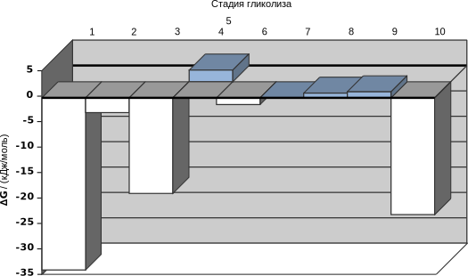
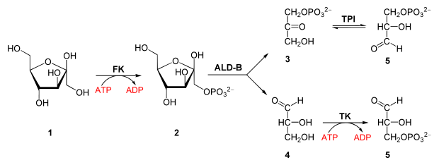

Гликолиз
Глико́лиз, или путь Эмбдена — Мейергофа — Парнаса[1] (от греч. γλυκός — сладкий и греч. λύσης — расщепление) — процесс окисления глюкозы, при котором из одной молекулы глюкозы образуются две молекулы пировиноградной кислоты. Гликолиз состоит из цепи последовательных ферментативных реакций и сопровождается запасанием энергии в форме АТФ и НАДH. Гликолиз является универсальным путём катаболизма глюкозы и одним из трёх (наряду с пентозофосфатным путём и путём Энтнера — Дудорова) путей окисления глюкозы, встречающихся в живых клетках. Реакция гликолиза в суммарном виде выглядит следующим образом:
Глюкоза + 2НАД+ + 2АДФ + 2Pi → 2 пируват + 2НАДH + 2Н+ + 2АТФ + 2Н2O[2].
Кислород не требуется для протекания гликолиза. В аэробных условиях пировиноградная кислота далее декарбоксилируется, соединяется с коферментом А и вовлекается в цикл Кребса. В анаэробных условиях (при гипоксии) пируват восстанавливается до молочной кислоты либо претерпевает дальнейшие превращения в ходе брожения[3][4].
Общий обзор
Распад шестиуглеродного сахара глюкозы на две молекулы трёхуглеродного пирувата осуществляется в 10 стадий, первые 5 которых составляют подготовительный этап с затратой АТФ, а 5 последующих — этап, сопряжённый с образованием АТФ. Все сахара и их производные, образующиеся при гликолизе, являются D-изомерами. В ходе реакций гликолиза глюкоза сначала фосфорилируется по гидроксильной группе при шестом атоме углерода (C-6), давая глюкозо-6-фосфат (стадия 1). Глюкозо-6-фосфат затем изомеризуется в фруктозо-6-фосфат (стадия 2), который вновь фосфорилируется, на этот раз по гидроксильной группе при первом атоме углерода, при этом образуется фруктозо-1,6-бисфосфат (стадия 3). В ходе обеих этих реакций фосфорилирования донором фосфорильной группы является АТФ. Далее фруктозо-1,6-бисфосфат расщепляется на две трёхуглеродные молекулы — дигидроксиацетонфосфат и глицеральдегид-3-фосфат (стадия 4), эта стадия и дала название всему пути. Дигидроксиацетонфосфат изомеризуется в глицеральдегид-3-фосфат (стадия 5), так что к концу подготовительного этапа из глюкозы образуется 2 молекулы глицеральдегид-3-фосфата, которые в дальнейшем претерпевают одинаковые превращения. Изомеризация на стадии 2 необходима для дальнейшего фосфорилирования, а также разрыва связи С—С на стадии 4, как будет подробнее показано в дальнейшем. При этом в подготовительной стадии гликолиза расходуется 2 молекулы АТФ, что увеличивает свободную энергию промежуточных соединений пути[5].
Энергетическую выгоду даёт второй этап гликолиза, сопряжёный с образованием АТФ. Каждая из двух молекул глицеральдегид-3-фосфата окисляется и фосфорилируется фосфорной кислотой (а не АТФ), образуя 1,3-бисфосфоглицериновую кислоту (стадия 6). Выделение энергии происходит при превращении двух молекул 1,3-бисфосфоглицерата в две молекулы пирувата (стадии 7—10), и большая часть этой энергии запасается при присоединении фосфатной группы к четырём молекулам АДФ с образованием четырёх молекул АТФ. Суммарный выход составляет 2 молекулы АТФ на молекулу глюкозы, поскольку 2 молекулы АТФ расходуются в подготовительном этапе. Кроме того, во втором этапе гликолиза часть энергии запасается при образовании двух молекул восстановленного НАДH на одну молекулу глюкозы[4].
Таким образом, гликолиз включает в себя химические перестройки следующего типа:
- расщепление шестиуглеродного скелета глюкозы на два трёхуглеродных пирувата;
- фосфорилирование АДФ до АТФ, осуществляемое при отрыве фосфата от соединений с высоким потенциалом переноса фосфата, образующихся при гликолизе (таким образом, АТФ при гликолизе образуется за счёт субстратного фосфорилирования, в отличие от окислительного фосфорилирования дыхательной цепи, где АТФ образуется за счёт переноса электронов и протонов по цепи переносчиков[6]);
- перенос иона Н+ к НАД+ с образованием восстановленного НАДН[4].
Итак, суммарное уравнение гликолиза:
Глюкоза + 2НАД+ + 2АДФ + 2Pi → 2 пируват + 2НАДH + 2Н+ + 2АТФ + 2Н2O[2].
Значение фосфорилирования промежуточных соединений
Каждое из 9 промежуточных соединений на пути от глюкозы к пирувату содержат остатки ортофосфорной кислоты. По-видимому, фосфатные группы в этом случае выполняют следующие 3 функции:
- Поскольку в клеточной мембране, как правило, отсутствуют белки-переносчики для фосфорилированных сахаров, фосфорилированные промежуточные соединения, а также глюкозо-6-фосфат не могут покинуть клетку. После первоначального фосфорилирования для удержания внутри клетки фосфорилированных соединений больше не нужно дополнительной энергии, несмотря на большую разницу между внутри- и внеклеточной концентрацией этих соединений.
- Фосфатные группы необходимы для хранения метаболической энергии. Энергия, которая потенциально может быть высвобождена при гидролизе фосфоангидридных[en] связей (например, в АТФ), частично запасается при образовании эфиров фосфорной кислоты, например, глюкозо-6-фосфата. В дальнейшем высокоэнергетические соединения, содержащие фосфатную группу и образующиеся в ходе гликолиза (1,3-бисфосфоглицерат и фосфоенолпируват), выступают в качестве доноров фосфорильной группы при образовании АТФ из АДФ.
- Энергия связывания фосфатных групп с активными центрами ферментов снижает энергию активации и увеличивает специфичность ферментативных реакций. Фосфатные группы АДФ, АТФ и промежуточных продуктов гликолиза образуют комплексы с ионами Mg2+. Места связывания субстрата многих ферментов специфичны к этим комплексам. Для активности большинства ферментов гликолиза необходим Mg2+[7].
Энергетика
С энергетической точки зрения в гликолизе можно выделить 2 процесса:
- Превращение глюкозы в пируват — энергетически выгодный процесс:
Глюкоза + 2NAD+ → 2 пируват + 2NADH + 2Н+, ΔG′1 = −146 кДж/моль[7]; - Образование ATP из ADP и 2Pi — энергетически невыгодный процесс:
2ADP + 2Pi → 2ATP + 2Н2O, ΔG′2 = 2(30,5 кДж/моль) = 61,0 кДж/моль[7];
Общее изменение энергии Гиббса при гликолизе ΔG′s составляет:
ΔG′s = ΔG′1 + ΔG′2 =
−146 кДж/моль + 61 кДж/моль = −85 кДж/моль[7].
Поэтому при нормальных условиях, а также клеточных условиях (отличных от нормальных) гликолиз является в значительной мере необратимым процессом благодаря значительному уменьшению свободной энергии системы[7].

alt="Изменение свободной энергии (ΔG, кДж/моль) на каждой стадии гликолиза">Из представленной выше диаграммы видно, что только три реакции (1, 3 и 10) протекают с высоким изменением свободной энергии, причём равновесие сильно смещено в сторону образования конечных продуктов, а другие реакции легко обратимы. При глюконеогенезе они могут идти в противоположном направлении, причём их будут катализировать те же ферменты, что и при гликолизе. Для необратимых реакций 1, 3 и 10 в глюконеогенезе используются обходные пути[19].
Гликолиз других углеводов
Многие углеводы, отличные от глюкозы, также разрушаются по пути гликолиза, но после того, как они будут переведены в одно из промежуточных соединений гликолиза[20].
Гликоген и крахмал
Полимеры глюкозы гликоген, запасаемый в тканях животных, и крахмал, запасаемый растениями, могут быть использованы клеткой для получения энергии при помощи гликогенолиза — фосфоролитической реакции, осуществляемой гликогенфосфорилазой (или крахмалфосфорилазой[en] у растений). Эти ферменты катализируют атаку гликозидной связи (α1→4), соединяющей два крайних остатка глюкозы на неветвящемся конце, фосфат-ионом, в результате чего образуется глюкозо-1-фосфат и полимер глюкозы, содержащий на фрагмент глюкозы меньше, чем исходный. Часть энергии гликозидной связи при этом запасается в виде эфирной связи, соединяющей фосфат с глюкозой в глюкозо-1-фосфате. Фосфорилаза продолжает отщеплять по одному остатку глюкозы до тех пор, пока не дойдёт до точки ветвления полисахарида (гликозидной связи (α1→6)), где она останавливается. Глюкозо-1-фосфат переводится в глюкозо-6-фосфат ферментом фосфоглюкомутазой, катализирующим обратимую реакцию:
Глюкозо-1-фосфат ⇌ глюкозо-6-фосфат.
Механизм действия этого фермента такой же, как у фосфоглицератмутазы. Образующийся в ходе этой реакции глюкозо-6-фосфат может далее быть задействован в гликолизе или пентозофосфатном пути[21].
Описанная выше ситуация характерна лишь для гликогена и крахмала, запасённых внутри клетки. Фосфоролиз гликогена и крахмала, поступающих в организм с пищей, в пищеварительном тракте не имеет никаких преимуществ перед обычным гидролизом: так как клеточные мембраны непроницаемы для фосфатов сахаров, образующийся при фосфоролизе[en] глюкозо-6-фосфат необходимо сначала превратить в обычный сахар[21]. При гидролизе, осуществляемом, например, пищеварительным ферментом α-амилазой, частицей, атакующей гликозидную связь, является вода, а не фосфат-ион[20].
Дисахариды
Дисахариды до их проникновения в клетку предварительно гидролизуются до соответствующих моносахаридов. В пищеварительном тракте такой гидролиз осуществляют ферменты, прикреплённые к поверхности клеток пищеварительного эпителия (в скобках указан фермент, катализирующий соответствующую реакцию):
- Декстрин (полисахарид) + nH2O → n D-глюкоза (декстриназа);
- Мальтоза + H2O → 2 D-глюкоза (мальтаза);
- Лактоза + H2O → D-галактоза + D-глюкоза (лактаза);
- Сахароза + H2O → D-фруктоза + D-глюкоза (сахараза);
- Трегалоза + H2O → 2 D-глюкоза (трегалаза)[21].
Образующиеся моносахариды активно транспортируются в эпителиальные клетки, затем попадают в кровь и разносятся к различных тканям, где фосфорилируются и вовлекаются в гликолиз[21].
Другие моносахариды
Фруктоза
У большинства организмов гексозы, отличные от глюкозы, вовлекаются в гликолиз после преобразования в фосфорилированное производное. Гликолитическое расщепление фруктозы называется фруктолиз[en][22]. D-Фруктоза, в свободном виде присутствующая во многих фруктах и образующаяся при гидролизе сахарозы в тонкой кишке у позвоночных, фосфорилируется гексокиназой:
Фруктоза + ATP → фруктозо-6-фосфат + ADP (реакция идёт в присутствии Mg2+)[23].
Такой путь является основным механизмом вовлечения фруктозы в гликолиз в мышцах и почках. В печени она вовлекается в гликолиз иначе. Фермент печени фруктокиназа[en] катализирует фосфорилирование фруктозы по С-1, а не С-6:
Фруктоза + ATP → фруктозо-1-фосфат + ADP (реакция идёт в присутствии Mg2+).
Далее фруктозо-1-фосфат расщепляется на глицеральдегид и дигидроксиацетонфосфат ферментом фруктозо-1-фосфатальдолазой. Далее дигидроксиацетонфосфат превращается в глицеральдегид-3-фосфат гликолитическим ферментом триозофосфатизомеразой, а глицеральдегид фосфорилируется ATP и ферментом триозокиназой[en] до глицеральдегид-3-фосфата:
Глицеральдегид + ATP → Глицеральдегид-3-фосфат + ADP (реакция идёт в присутствии Mg2+).
Получившиеся 2 молекулы глицеральдегид-3-фосфата вовлекаются в гликолиз[23]. Ниже представлена схема вышеописанных процессов:
Галактоза
D-Галактоза, продукт гидролиза лактозы, из кишечника всасывается в кровь, откуда попадает в печень, где фосфорилируется галактокиназой[en] по С-1 с затратой АТФ:
Галактоза + ATP → галактозо-1-фосфат + ADP (реакция идёт в присутствии Mg2+).
Галактозо-1-фосфат далее эпимеризуется[en] по С-4 в глюкозо-1-фосфат в серии реакций, в которых уридиндифосфат[en] (UDP) функционирует как коферментоподобный переносчик гексоз. Эпимеризация включает сначала окисление гидроксильной группы при С-4 до кетогруппы, а затем обратное восстановление кетогруппы до гидроксильной с обращённой конфигурацией. В этих двух реакциях окисления и восстановления кофактором выступает NAD[23]. Ниже представлена схема описанного процесса:
Манноза
D-Манноза, образующаяся при пищеварительном расщеплении многих полисахаридов и гликопротеинов, может быть фосфорилирована по С-6 гексокиназой:
Манноза + ATP → маннозо-6-фосфат + ADP (реакция идёт в присутствии Mg2+).
Маннозо-6-фосфат[en] далее изомеризуется ферментом фосфоманнозоизомеразой[en] до фруктозо-6-фосфата — промежуточного соединения гликолиза[23].